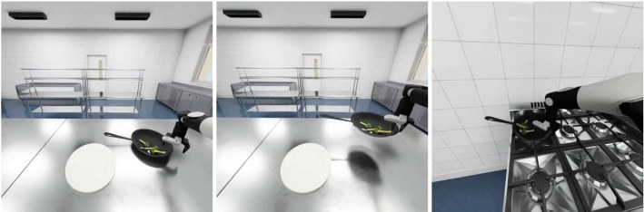

Task 96cook broccolini
Grab the rim, skip the detour
If the pan's handle points away or sideways, the robot grasps the near rim instead, lifts the pan level and carries it to the stove. This avoids walking around the kitchen island to reach the handle.